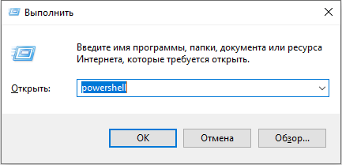
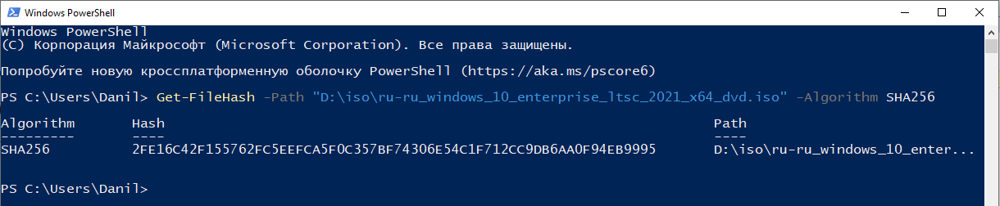
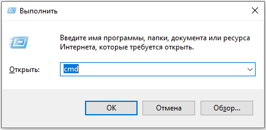
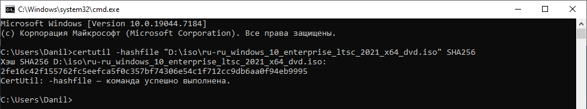

1. Нажмите Win + R, введите powershell, нажмите Enter

2. В новом окне вставьте команду, заменив путь к своему ISO. Снова нажмите Enter и немного подождите
Get-FileHash -Path "C:\путь\к\файлу.iso" -Algorithm SHA256

1. Нажмите Win + R, введите cmd, нажмите Enter

2. Всё тоже самое, что и в powershell, только команда чутка отличается
certutil -hashfile "C:\путь\к\файлу.iso" SHA256
